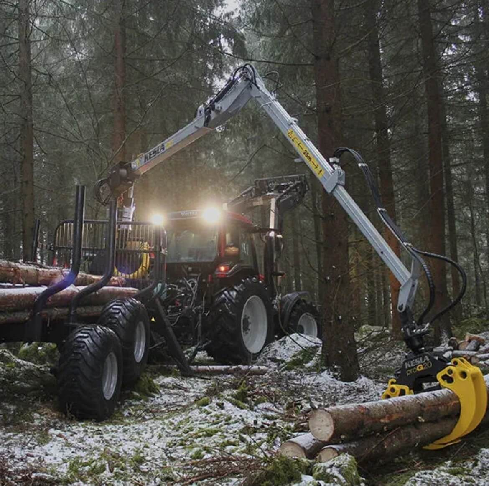

Service de Déboisement en Estrie
Déboisement professionnel pour vos projets résidentiels et commerciaux à Granby, Bromont, Waterloo et partout en Estrie. Nous utilisons des équipements de pointe pour assurer un travail rapide, sécuritaire et respectueux de l'environnement.
- Équipement spécialisé moderne
- Respect des normes environnementales
- Nettoyage complet du terrain
- Bonne ristourne aux propriétaires de terrain
- Service rapide et professionnel
Zones desservies: Shefford, Granby, Bromont, Waterloo, Cowansville, Saint-Jean-sur-Richelieu, et toute l'Estrie